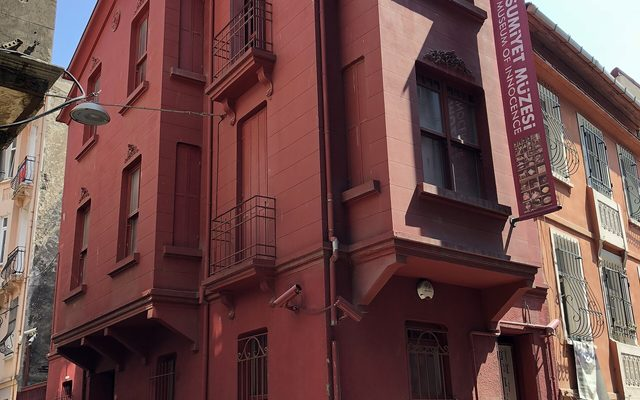
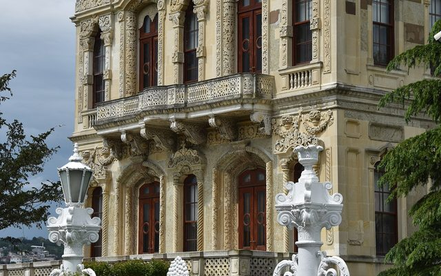
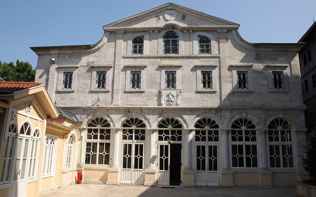
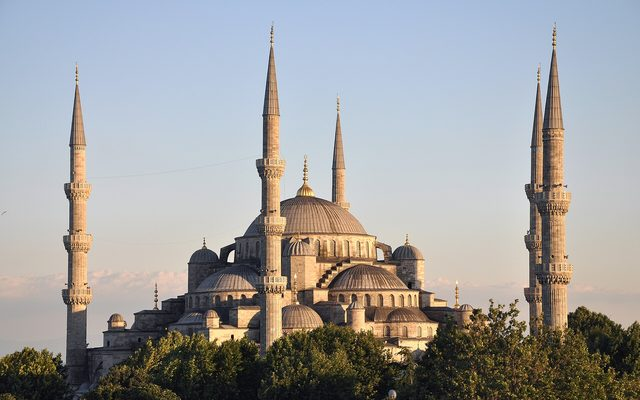

मुखपृष्ठ › प्रांत-दर-प्रांत घूमने की जगहें › इस्तांबुल
Kültür Varlıkları गाइड में इस्तांबुल की 89 जगहें हैं: 52 संग्रहालय, 21 क़िला और ऐतिहासिक इमारत, 14 धार्मिक इमारत, 2 पुरातात्विक स्थल। नीचे मुख्य आकर्षण, नक्शा और पूरी सूची है।
⭐ मुख्य आकर्षण

1 · इस्तांबुल · संग्रहालयइस्तांबुल पुरातत्व संग्रहालय
तोपकापी महल के बाहरी बग़ीचों में गुलहाने में स्थित इस्तांबुल पुरातत्व संग्रहालय उस्मानी साम्राज्य के पहले आधुनिक संग्रहालय के रूप में स्थापित हुए। चित्रकार और…

2 · इस्तांबुल · संग्रहालयमहान महल मोज़ेक संग्रहालय
सुल्तानअहमत में अरास्ता बाज़ार के ठीक नीचे स्थित महान महल मोज़ेक संग्रहालय उस महान महल के सबसे प्रभावशाली अवशेष दिखाता है, जहाँ बीजान्टिन सम्राट सदियों तक रहे। ये…

3 · इस्तांबुल · संग्रहालयद्वीप संग्रहालय
ब्युकादा में एक पुराने हैंगर में 2010 में खुला यह संग्रहालय प्रिंसेस द्वीपों की कहानी बताता है: बीज़ान्टिन निर्वासन स्थल से घोड़ागाड़ियों वाले ग्रीष्म जीवन और…
🗺 नक्शे पर
📍 सभी जगहें (89)
संग्रहालय (52)
इस्तांबुल पुरातत्व संग्रहालयसंग्रहालयमहान महल मोज़ेक संग्रहालयसंग्रहालयद्वीप संग्रहालयसंग्रहालय आदम मित्स्केविच संग्रहालयसंग्रहालय
आदम मित्स्केविच संग्रहालयसंग्रहालय आरा ग्युलर संग्रहालयसंग्रहालय
आरा ग्युलर संग्रहालयसंग्रहालय आर्तेरसंग्रहालय
आर्तेरसंग्रहालय सैन्य संग्रहालयसंग्रहालय
सैन्य संग्रहालयसंग्रहालय अतातुर्क संग्रहालय (शिशली)संग्रहालय
अतातुर्क संग्रहालय (शिशली)संग्रहालय एटलस 1948 इस्तांबुल सिनेमा संग्रहालयसंग्रहालय
एटलस 1948 इस्तांबुल सिनेमा संग्रहालयसंग्रहालय आया सोफ़िया इतिहास और अनुभव संग्रहालयसंग्रहालय
आया सोफ़िया इतिहास और अनुभव संग्रहालयसंग्रहालय बेयाज़ित हमाम संस्कृति संग्रहालयसंग्रहालय
बेयाज़ित हमाम संस्कृति संग्रहालयसंग्रहालय बेयकोज़ काँच और बिल्लौर संग्रहालयसंग्रहालय
बेयकोज़ काँच और बिल्लौर संग्रहालयसंग्रहालय जेंदेरे कला संग्रहालयसंग्रहालय
जेंदेरे कला संग्रहालयसंग्रहालय एल्गिज़ समकालीन कला संग्रहालयसंग्रहालय
एल्गिज़ समकालीन कला संग्रहालयसंग्रहालय फ़ेनेरबाचे संग्रहालयसंग्रहालय
फ़ेनेरबाचे संग्रहालयसंग्रहालय फ़ेतिये संग्रहालयसंग्रहालय
फ़ेतिये संग्रहालयसंग्रहालय फ़्लोर्या अतातुर्क समुद्री मंडपसंग्रहालय
फ़्लोर्या अतातुर्क समुद्री मंडपसंग्रहालय गलाता मेवलेवीख़ाना संग्रहालयसंग्रहालय
गलाता मेवलेवीख़ाना संग्रहालयसंग्रहालय हाफ़िज़ा 15 जुलाई संग्रहालयसंग्रहालय
हाफ़िज़ा 15 जुलाई संग्रहालयसंग्रहालय केमाल सुनाल संग्रहालयसंग्रहालय
केमाल सुनाल संग्रहालयसंग्रहालय काज़िम काराबेकिर पाशा संग्रहालयसंग्रहालय
काज़िम काराबेकिर पाशा संग्रहालयसंग्रहालय
मासूमियत संग्रहालयसंग्रहालय मेहमत आकिफ़ एरसोय स्मृति-गृहसंग्रहालय
मेहमत आकिफ़ एरसोय स्मृति-गृहसंग्रहालय मिनियातुर्कसंग्रहालय
मिनियातुर्कसंग्रहालय म्यूज़े गैसख़ानासंग्रहालय
म्यूज़े गैसख़ानासंग्रहालय ओरहान केमाल संग्रहालयसंग्रहालय
ओरहान केमाल संग्रहालयसंग्रहालय पैनोरमा 1453 इतिहास संग्रहालयसंग्रहालय
पैनोरमा 1453 इतिहास संग्रहालयसंग्रहालय पेरा संग्रहालयसंग्रहालय
पेरा संग्रहालयसंग्रहालय पियरे लोती संग्रहालयसंग्रहालय
पियरे लोती संग्रहालयसंग्रहालय रहमी एम. कोच संग्रहालयसंग्रहालय
रहमी एम. कोच संग्रहालयसंग्रहालय रेज़ान हास संग्रहालयसंग्रहालय
रेज़ान हास संग्रहालयसंग्रहालय सादबेर्क हानिम संग्रहालयसंग्रहालय
सादबेर्क हानिम संग्रहालयसंग्रहालय सैत फ़ाइक अबासियानिक संग्रहालयसंग्रहालय
सैत फ़ाइक अबासियानिक संग्रहालयसंग्रहालय साकिप सबांजी संग्रहालयसंग्रहालय
साकिप सबांजी संग्रहालयसंग्रहालय साल्ट गलातासंग्रहालय
साल्ट गलातासंग्रहालय तुर्की वक़्फ़ सुलेखन संग्रहालयसंग्रहालय
तुर्की वक़्फ़ सुलेखन संग्रहालयसंग्रहालय तुर्क और इस्लामी कला संग्रहालयसंग्रहालय
तुर्क और इस्लामी कला संग्रहालयसंग्रहालय तुर्किये इश बैंक संग्रहालयसंग्रहालय
तुर्किये इश बैंक संग्रहालयसंग्रहालय याह्या कमाल संग्रहालयसंग्रहालय
याह्या कमाल संग्रहालयसंग्रहालय यिल्दिज़ पोर्सिलेन कारख़ानासंग्रहालय
यिल्दिज़ पोर्सिलेन कारख़ानासंग्रहालय सांत्रालइस्तांबुल ऊर्जा संग्रहालयसंग्रहालय
सांत्रालइस्तांबुल ऊर्जा संग्रहालयसंग्रहालय चाताल्जा आबादी विनिमय संग्रहालयसंग्रहालय
चाताल्जा आबादी विनिमय संग्रहालयसंग्रहालय इस्लाम में विज्ञान और प्रौद्योगिकी इतिहास संग्रहालयसंग्रहालय
इस्लाम में विज्ञान और प्रौद्योगिकी इतिहास संग्रहालयसंग्रहालय इस्मत इनोनु गृह संग्रहालयसंग्रहालय
इस्मत इनोनु गृह संग्रहालयसंग्रहालय इस्तांबुल नौसेना संग्रहालयसंग्रहालय
इस्तांबुल नौसेना संग्रहालयसंग्रहालय इस्तांबुल विमानन संग्रहालयसंग्रहालय
इस्तांबुल विमानन संग्रहालयसंग्रहालय इस्तांबुल मॉडर्नसंग्रहालय
इस्तांबुल मॉडर्नसंग्रहालय इस्तांबुल खिलौना संग्रहालयसंग्रहालयहिल्मी नाकिपोउलु कैमरा संग्रहालयसंग्रहालयहिसार्त जीवंत इतिहास और डायोरामा संग्रहालयसंग्रहालयकांदिल्ली भूकंप संग्रहालयसंग्रहालयइस्तांबुल हवाई अड्डा संग्रहालयसंग्रहालय
इस्तांबुल खिलौना संग्रहालयसंग्रहालयहिल्मी नाकिपोउलु कैमरा संग्रहालयसंग्रहालयहिसार्त जीवंत इतिहास और डायोरामा संग्रहालयसंग्रहालयकांदिल्ली भूकंप संग्रहालयसंग्रहालयइस्तांबुल हवाई अड्डा संग्रहालयसंग्रहालयक़िला और ऐतिहासिक इमारत (21)
 अनादोलु हिसारीक़िला और ऐतिहासिक इमारत
अनादोलु हिसारीक़िला और ऐतिहासिक इमारत आयनालिकावाक मंडपक़िला और ऐतिहासिक इमारत
आयनालिकावाक मंडपक़िला और ऐतिहासिक इमारत बेयलरबेयी महलक़िला और ऐतिहासिक इमारत
बेयलरबेयी महलक़िला और ऐतिहासिक इमारत बिनबिरदिरेक हौज़ (फ़िलोक्सेनोस)क़िला और ऐतिहासिक इमारत
बिनबिरदिरेक हौज़ (फ़िलोक्सेनोस)क़िला और ऐतिहासिक इमारत बोज़दोगान जलसेतु (वेलेंस जलसेतु)क़िला और ऐतिहासिक इमारत
बोज़दोगान जलसेतु (वेलेंस जलसेतु)क़िला और ऐतिहासिक इमारत दोल्माबाहचे महलक़िला और ऐतिहासिक इमारत
दोल्माबाहचे महलक़िला और ऐतिहासिक इमारत इहलामुर मंडपक़िला और ऐतिहासिक इमारत
इहलामुर मंडपक़िला और ऐतिहासिक इमारत
कुचुकसु मंडपक़िला और ऐतिहासिक इमारत मेडन्स टावर (क्ज़ कुलेसी)क़िला और ऐतिहासिक इमारत
मेडन्स टावर (क्ज़ कुलेसी)क़िला और ऐतिहासिक इमारत मसलाक मंडपक़िला और ऐतिहासिक इमारत
मसलाक मंडपक़िला और ऐतिहासिक इमारत रामी बैरक (रामी पुस्तकालय)क़िला और ऐतिहासिक इमारत
रामी बैरक (रामी पुस्तकालय)क़िला और ऐतिहासिक इमारत रुमेली हिसारीक़िला और ऐतिहासिक इमारत
रुमेली हिसारीक़िला और ऐतिहासिक इमारत थियोडोसियस की दीवारेंक़िला और ऐतिहासिक इमारत
थियोडोसियस की दीवारेंक़िला और ऐतिहासिक इमारत तोपकापी महलक़िला और ऐतिहासिक इमारत
तोपकापी महलक़िला और ऐतिहासिक इमारत येदिकुले किलाक़िला और ऐतिहासिक इमारत
येदिकुले किलाक़िला और ऐतिहासिक इमारत बेसिलिका सिस्टर्न (येरेबातान)क़िला और ऐतिहासिक इमारत
बेसिलिका सिस्टर्न (येरेबातान)क़िला और ऐतिहासिक इमारत यिल्दिज़ महलक़िला और ऐतिहासिक इमारत
यिल्दिज़ महलक़िला और ऐतिहासिक इमारत कॉन्स्टेंटाइन स्तंभ (चेम्बरलिताश)क़िला और ऐतिहासिक इमारत
कॉन्स्टेंटाइन स्तंभ (चेम्बरलिताश)क़िला और ऐतिहासिक इमारत इस्तांबुल गलाता बुर्जक़िला और ऐतिहासिक इमारत
इस्तांबुल गलाता बुर्जक़िला और ऐतिहासिक इमारत शेरेफ़िये (थियोडोसियस) हौज़क़िला और ऐतिहासिक इमारतफ़िलदामी हौज़क़िला और ऐतिहासिक इमारत
शेरेफ़िये (थियोडोसियस) हौज़क़िला और ऐतिहासिक इमारतफ़िलदामी हौज़क़िला और ऐतिहासिक इमारतधार्मिक इमारत (14)
 अहरिदा सिनेगॉगधार्मिक इमारत
अहरिदा सिनेगॉगधार्मिक इमारत हागिया आइरीनधार्मिक इमारत
हागिया आइरीनधार्मिक इमारत हागिया सोफ़िया महान मस्जिदधार्मिक इमारत
हागिया सोफ़िया महान मस्जिदधार्मिक इमारत बुल्गारियाई संत स्टीफ़न गिरजाघर (लोहे का गिरजाघर)धार्मिक इमारत
बुल्गारियाई संत स्टीफ़न गिरजाघर (लोहे का गिरजाघर)धार्मिक इमारत एयूप सुल्तान मस्जिदधार्मिक इमारत
एयूप सुल्तान मस्जिदधार्मिक इमारत
विश्वव्यापी पैट्रियार्केट और संत जॉर्ज गिरजाघरधार्मिक इमारत करिये मस्जिद (खोरा)धार्मिक इमारत
करिये मस्जिद (खोरा)धार्मिक इमारत मिहरिमाह सुल्तान मस्जिद (एदिर्नेकापी)धार्मिक इमारत
मिहरिमाह सुल्तान मस्जिद (एदिर्नेकापी)धार्मिक इमारत रुस्तम पाशा मस्जिदधार्मिक इमारत
रुस्तम पाशा मस्जिदधार्मिक इमारत पादुआ के संत एंटनी का गिरजाघरधार्मिक इमारत
पादुआ के संत एंटनी का गिरजाघरधार्मिक इमारत
सुल्तान अहमद मस्जिद (ब्लू मस्जिद)धार्मिक इमारत सुलेमानिये मस्जिदधार्मिक इमारत
सुलेमानिये मस्जिदधार्मिक इमारत इमराहोर इल्यास बे मस्जिद (स्टूडियोस मठ)धार्मिक इमारत
इमराहोर इल्यास बे मस्जिद (स्टूडियोस मठ)धार्मिक इमारत शहज़ादे मस्जिदधार्मिक इमारत
शहज़ादे मस्जिदधार्मिक इमारत